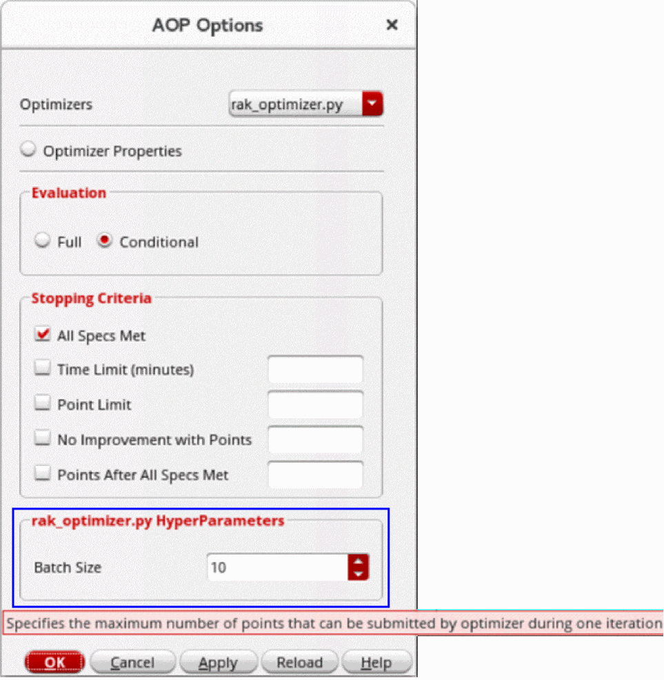

Example of Custom Optimization Algorithm
You can create a custom optimization algorithm either in C++ or Python.
The following piece of code shows an example of the custom optimization algorithm written in Python.
# ***************************************************************************
# Copyright 2023 Cadence Design Systems, Inc.
# All Rights Reserved.
#
# This work cannot be republished or copied in its original form
# without prior written permission from Cadence Design Systems, Inc.
#
# Permission is granted to modify this code for the purpose of
# developing new optimizers to run within Virtuoso Studio.
# ***************************************************************************
import dso
import numpy as np
import random
random.seed(1)
class RakOptimizer(dso.BaseOptimizer):
def __init__(self):
super().__init__()
self.optimizer_info.set_optimizer_name(name='RAK Optimizer')
self.optimizer_info.set_hyperparameter_property_range(
hp='batchSize',
hp_default=2,
hp_min=2,
hp_step=1,
hp_max=1000,
hp_description='Controls Batch Size')
# def pre_processing(self):
# pass
def get_points(self):
point_dic = self.domain.sample(size=self.hyper_params['batchSize'])
point_array = point_dic.parse_into_object(out_type=np.ndarray)
ret = dso.GetPointsReturnType()
ret.parse_from_object(domain=self.domain, samples=point_array)
return ret
def record_evaluations(self, evaluation_result):
pass
if __name__ == '__main__':
RakOptimizer().run()
Methods Used in the Custom Optimization Algorithm Example
In the example of custom optimization algorithm, following methods are used:
-
__init__()
It is a Python constructor that is loaded with the AOP framework. It contains essential information about the optimization algorithm, such as name, description, and details of hyperparameters. Note that specific design space information is not accessible at this stage because simulation run in ADE Assembler has not started yet.
The details of optimizer hyperparameters can be defined as follows.self.optimizer_info.set_hyperparameter_property_range(
hp='Batch Size',
hp_default=100,
hp_min=10,
hp_step=1,
hp_max=1000,
hp_description='Specifies the maximum number of points that can be submitted by optimizer during one iteration')
In this example, a hyperparameter named Batch Size is defined. The default value of this parameter is100. The minimum and maximum values for this hyperparameters is10and1000, respectively. The tooltip for this hyperparameters reads: Specifies the maximum number of points that can be submitted by optimizer during one iteration.
This hyperparameter option is displayed in the rak_optimizer.py HyperParameters section of the AOP Options form, as follows:
Where,rak_optimizer.pyis the name of the custom optimization algorithm currently selected in the Optimizers drop-down list. -
pre_processing()
This method is used to initialize settings that are necessary for the optimization run. Information about design space is available at this stage because optimization run is started in ADE Assembler. -
get_points()
This method is used by the AOP framework to request the optimization algorithm for the points to simulate. -
record_evaluations()
This method is used by AOP framework to return the merit values associated with the simulated points. In this example, the optimizer performs random sampling and does not use any information returned from ADE Assembler.
Related Topics
Advantages of Advanced Optimization
Integrating a Custom Optimizer into ADE Assembler
Return to top